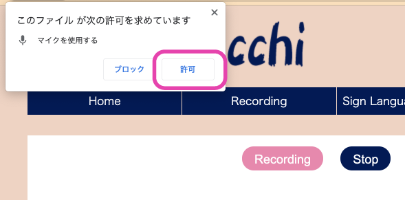
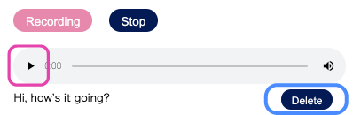

How to use recording
This function is designed so that people who cannot speak in public can speak with their one voice.
Play back the voice recorded at home at school and use it.
1.At first
When you open the page,you will be asked if you want to use the microphone.Select"Yes".

2.How to record
Press the red "Record" button on the left to record the text or greeting you want to use.
When you have finished recording,press the "stop" button to stop recording.
Please enter the recorded text or greeting
3.How to play
Press the button above the text you want to play to play the recorded text or greeting.
You can also erase the recorded text with the "Elase" button at the bottom right.
